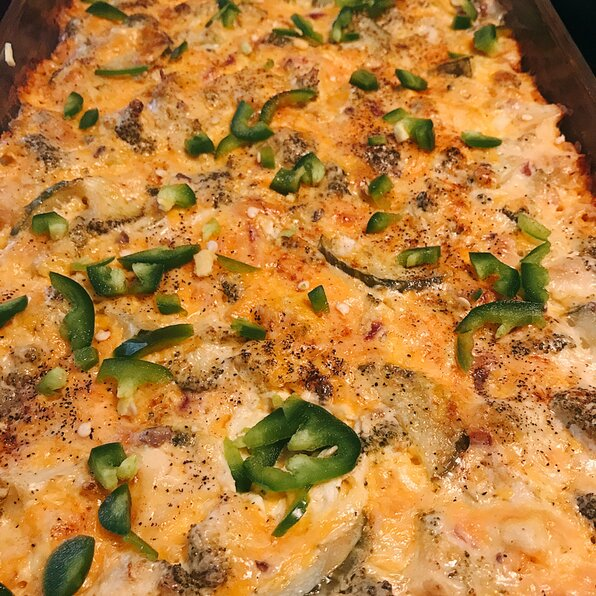

Awesome Broccoli Cheese

Description
My mom used to make this easy recipe every Thanksgiving when I was little.
We kids could never get enough! It was our very favorite Thanksgiving vegetable.
If you have children, or have some coming to visit you as guests this Thanksgiving, I guarantee that they will eat (and enjoy) this veggie dish! Even though I rarely cook with canned condensed soups, I still make this yummy broccoli casserole during the holiday season.
It's fabulous with a Christmas ham and potatoes au gratin too. Mmmmmmm!
ingredients
- 1 (10.75 ounce) can condensed cream of mushroom soup
- 1 cup mayonnaise
- 1 egg, beaten
- ¼ cup onions, chopped
- 3 (10 ounce) packages frozen chopped broccoli
- 8 ounces shredded sharp Cheddar cheese
- salt and pepper to taste
- 1 dash paprika
Steps
- Preheat oven to 350 degrees F (175 degrees C). Butter a 9x13 inch baking dish.
- In a medium mixing bowl, whisk together condensed soup, mayonnaise, egg and onions.
- Place frozen broccoli into a very large mixing bowl. (I like to use my large stainless steel bowl to mix this recipe thoroughly.) Break up the frozen broccoli. Using a rubber spatula, scrape soup-mayonnaise mixture on top of broccoli, and mix well. Sprinkle on cheese, and mix well. Spread mixture into prepared baking dish, and smooth top of casserole. Season with salt, pepper and paprika.
- Bake for 45 minutes to 1 hour.